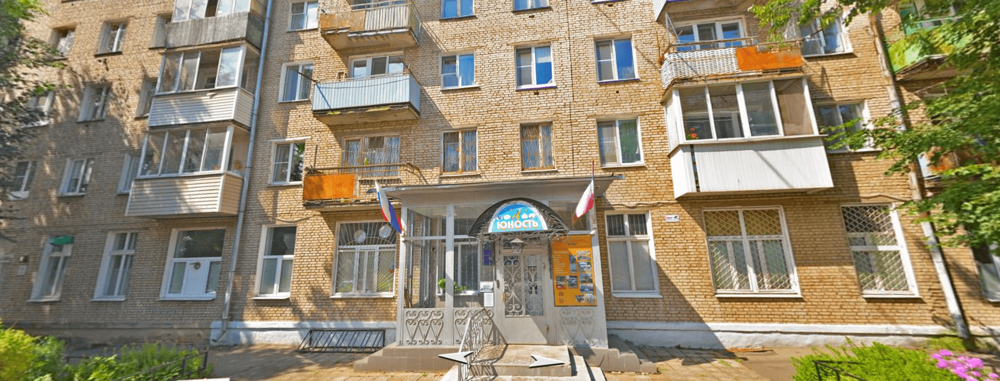
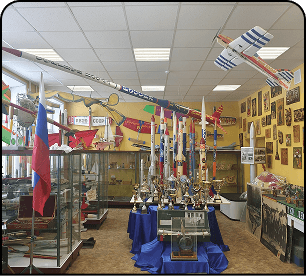
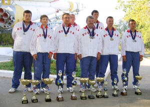

Центр детского (юношеского) технического творчества
Основные сведения
Муниципальное образовательное учреждение дополнительного образования
Центр детского (юношеского) технического творчества
«ЮНОСТЬ»
МБУ ДО ЦДТТ "Юность"
- Год создания:
- 1964
- Учредитель:
- Администрация Сергиево-Посадского муниципального района
- Язык образования:
- русский
- Адрес:
- Московская область, г. Сергиев Посад, пр-д Новозагорский, д. 3а
- Количество мест для обучения:
- 1548
- Лицензия на осуществление образовательной деятельности

Фильм к юбилею ЦентраНаправления
Центр детского (юношеского) технического творчества «Юность» является муниципальным учреждением дополнительного образования и воспитания детей и молодежи.
В настоящее время здесь занимается более 1000 воспитанников по следующим направлениям:
- Робототехника
- Ракетомодельное
- Авиамодельное
- Судомодельное
- Начальное Моделирование
- Компьютерное Направление
- Начальное Спортивное
- Радиотехническое
- Автомодельное
- Техническое Моделирование
- Спортивное
- Военно-Прикладное

Интерактивная экскурсия по Центру "Юность"
Педагоги
В Центре преподают высококлассные педагоги, имеющие огромный опыт работы с детьми и подростками - 7 педагогов имеют высшую категорию и 6 педагогов первой категории. В Центре работают и много молодых педагогов, которые выросли из воспитанников, а сейчас успешно преподающих, и участвующих в различных соревнованиях, своим личным примером показывая стремление к вершинам спортивного мастерства.
.jpeg)
.jpg)
.jpg)
Спортивные направления
В ЦДТТ «Юность» большое внимание уделяется спортивным направлениям, именно здесь воспитанники приобретают наиболее профессиональные навыки изготовления моделей. Кроме того, ученикам, занимающимся именно по спортивным направлениям, при успешном выступлении на соревнованиях, присваиваются спортивные разряды.
Так за время работы ЦДТТ воспитанниками были выполнены спортивные звания:
- 1 – заслуженный тренер России
- 1 – заслуженный мастер спорта
- 6 – мастер спорта международного класса
- 32 – мастер спорта
- 76 – кандидат в мастера спорта
- 108 – 1-й разряд

Воспитанники ЦДТТ «Юность»
Состоят в сборных командах по спортивно-техническим видам спорта. Спортсмены Центра неоднократно становились чемпионами мира, Европы и России.
.jpg)
.jpg)
По другим направлениям в Центре дети и подростки учатся также различным техническим приемам и навыкам, повышают свою физическую подготовку на соревнованиях. Так в объединениях начального моделирования они получают азы работы инструментами и успешно участвуют в конкурсах и выставках различного ранга. Потом они могут заняться либо в спортивном направлении, либо более профессионально работать над стендовыми моделями.
Ежегодно ЦДТТ принимает участие более чем 40 различных мероприятиях: соревнованиях, показательных выступлениях, выставках, конкурсах. Передвижная выставка музея Центра позволяет организовать экспозицию технического творчества учащихся на различных массовых мероприятиях.